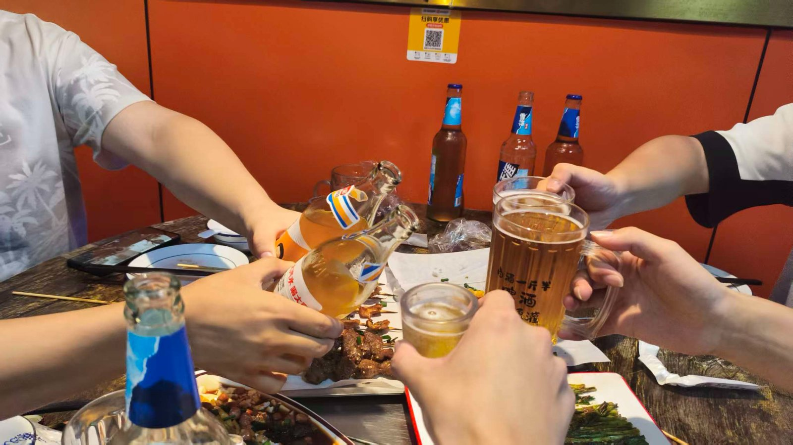
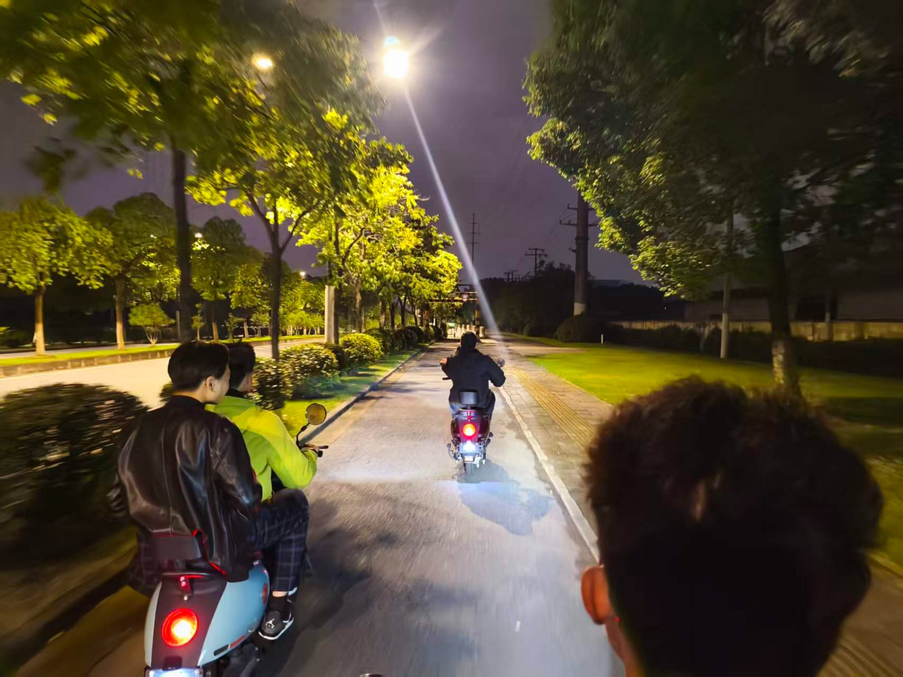
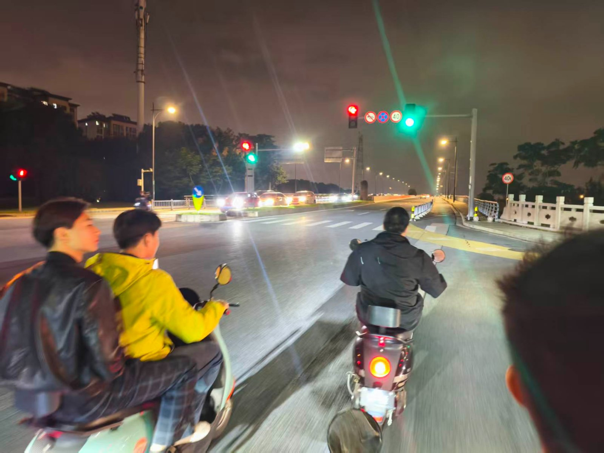

黑夜到来前的喘息
2026.10.6 许愿睡个好觉
上一篇的日记写到热水很贵，后面在洗一次澡后发现，其实并不是很贵，在同样的用水量，我只花了1毛，而同等情况下在学校要花1-3块之间。国庆的五天基本上在宿舍待着。四号跟实习的工友一起出去吃了顿。emmmmm。这段时间我一直在学视觉编程，我在犹豫我的专升本，或者说我的焦虑逐渐减轻，但我仍然对未知产生恐惧。我尝试只去做，但这也让我感到麻木，我不知道我能否坚持下去，坚持下去后又是否能获得成功，我迷茫，我企图用麻木应对，因为我看不到未来是什么样的。 昨晚没睡好，不知道为什么大脑一直处于活跃状态，可能想着昨天睡觉前写这篇文章，但又告诉自己先睡吧，毕竟打哈欠了确实困。但又告诉自己，你现在拖着明天搞不好就忘了，我在这两种状态拉扯中睡着，导致我3点就醒了，这时脑子还在活跃我关不掉它，最后6点我才二次入眠，但由于时长我没睡成好觉。



· 完 ·
初稿 2026.10.06 23:15 · 编辑于 2026.10.06 23:31
✎ 编修留痕
- 初稿2026.10.06 23:15
- 第 1 次编辑2026.10.06 23:31